6. Keycloak console¶
6.1. Introduction¶
This document explains the Exastro Suite's System management's Keycloak console.
6.2. KeyCloak console¶
They Keycloak console is used to change login method, password and password policy for Organization users and adding new administrators.
The user can also use the console to see a log of added roles and user changes.
- Select Keycloak consoleSelecting from the menu displays the Keycloak console page.
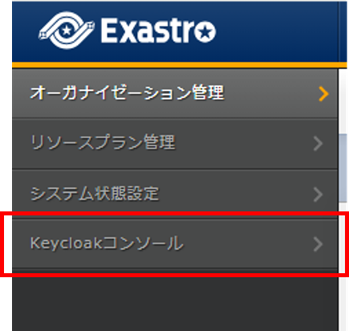 - Select realm (Organization)The user will need to select which realm (Organization) they are configuring before they can move to the next step.
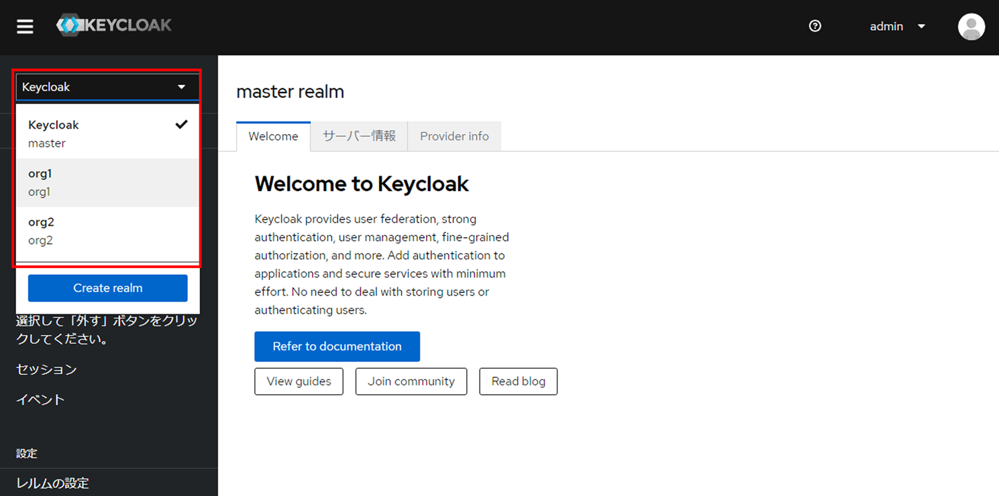 危険
We recommend that the user does not change any settings.The application might not function properly depending on what the user changed.注釈
For more information about minotoring policies and logs, see the Official Keycloak documentation.
{kind=link}
{kind=link}
6.2.1. Adding system administrator¶
- Add system adnimistratorWhen adding new system administrator, select the master realm. From the menu, select and press the Add user button. From there, the user can add new users by inputting the user information.
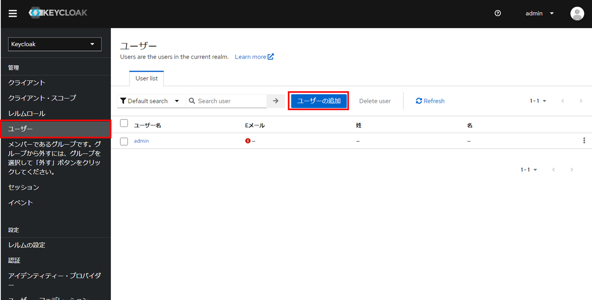 - Input System administrator's user informationInput information for the new user that will be added.
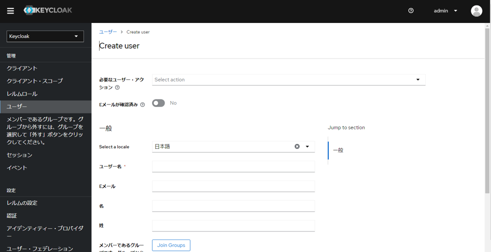 表 6.1 Item description¶ Item name
Description
Required user/actionAllows the user to configure wheat inforamtion to configure next the user logs in.For more detailes setting values, see the Official Keycloak documentation.E-mail verifiedSelect OFF※If there are not mail sending server configured, this will not work even if set to ONSelect a locationSelect which language the user will have displayedUsernameInput a Username for the user.E-mailInput an E-mail address for the user.NameInput a name for the user.Last nameInput a last name for the user.Join GroupsThis is not supported by Exastro at the moment. Do not specify anything. - Register System admin's userAfter inputting the required information, press the Create button to register the user.
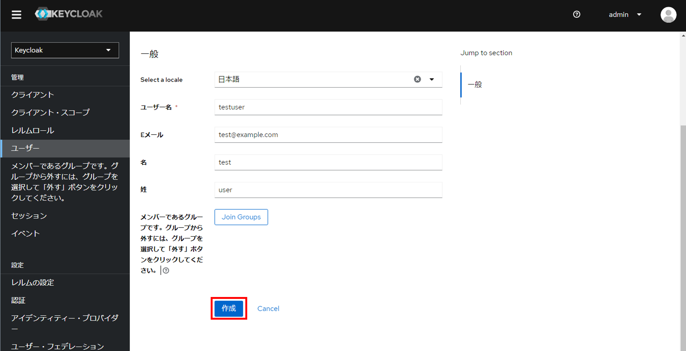 - Configure password for the new userNote that it is not possible to configure a password for the user in the user registration page. The next section in this document describes how to configure passwords.Select under User details to configure a password.Press the button and input the password. Press the Save button to save the password.
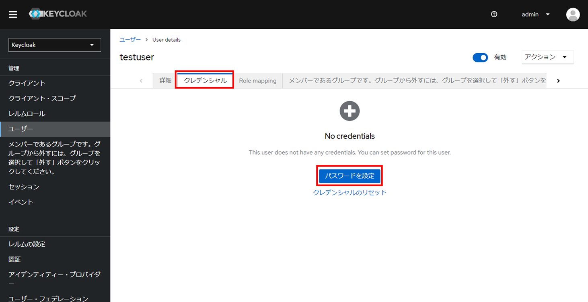 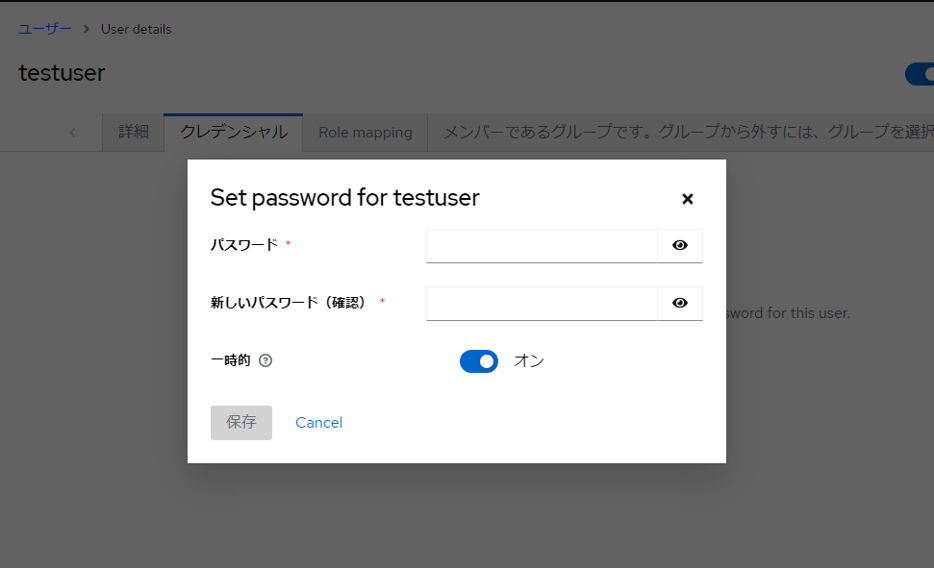 表 6.2 Item description¶ Item name
Description
PasswordInput the password that will be used when logging.New password(Confirmation)Input the same password once more.TemporaryIf set to ON, the next time the user logs in, they will be moved to the Password change page.We recommend the user keeps this at ON. - Configure role to the added userGiving the user the required Role allows them to configure settings as if they were a System admin.Select under User details to configure a Role.Press the button and select a role. After that, press the Assign button to assign the role to the user.
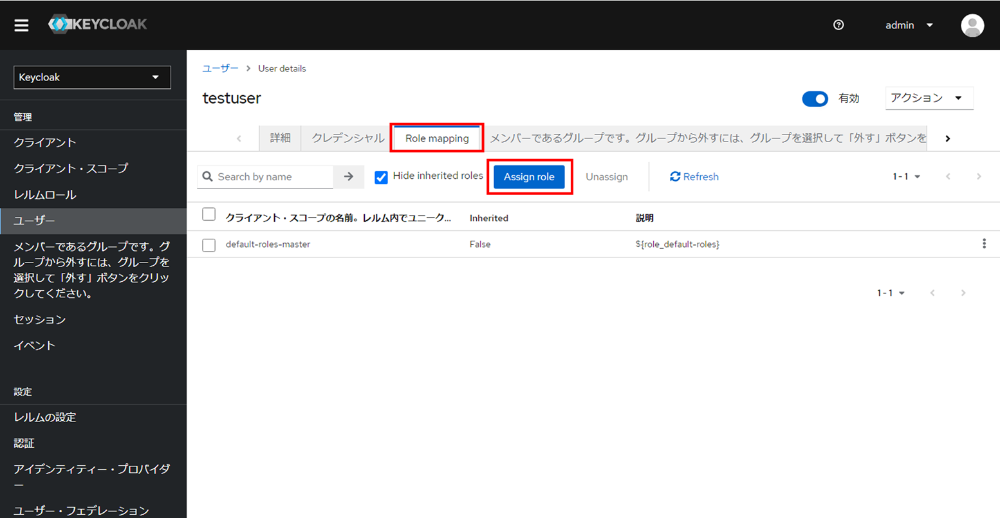 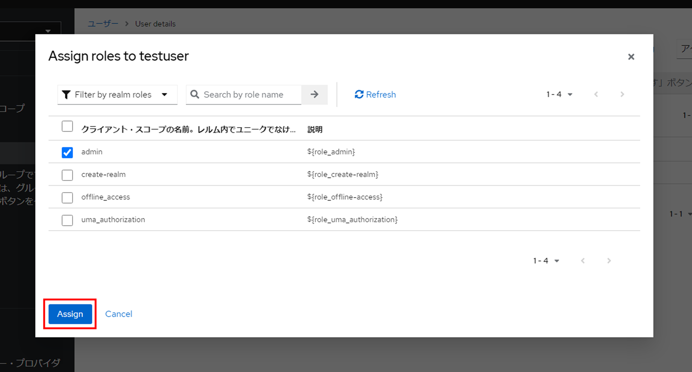 Finishing this will have added a user with the priveleges as a system admin.
{kind=link}
{kind=link}
{kind=link}
{kind=link}
{kind=link}
{kind=link}
{kind=link}
6.2.2. Changing the validity period of access tokens¶
During processes that may take a long time, such as uploading/downloading large files, a message saying "Failed to authenticate" may display.
This problem can be solved by changing the validity period of the acecss token.
- Select Client (Value same as Organization ID)Select the desired realm with the aforementioned Select Realm (Organization) ` and select :menuselection:`Client from the menu.This will display the page. From the Client ID row, select the Client that has the same value as the Organization.
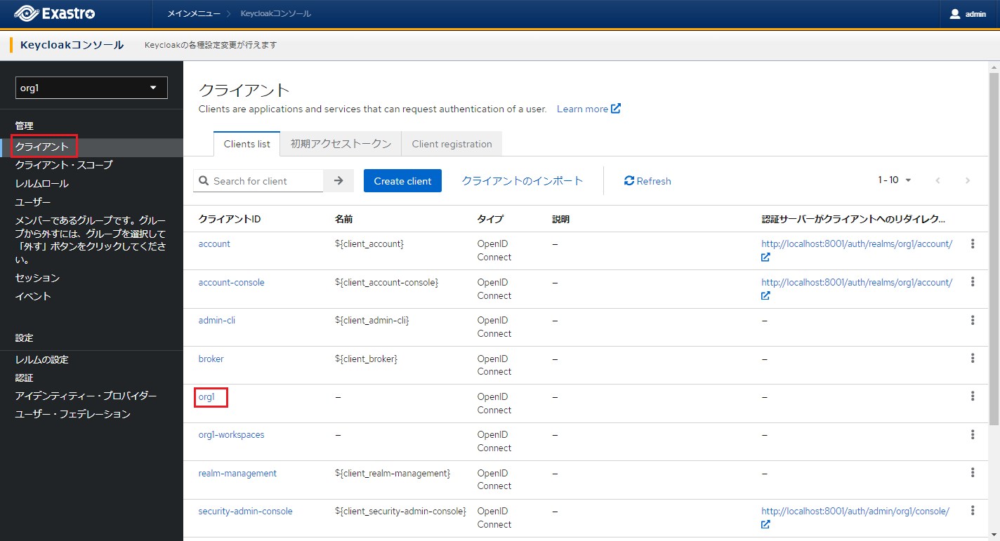 - DisplayAdvanced settings(Client)This will display the page. Select .From the right side of the Advanced page, select "Advanced settings" under "Jump to section".
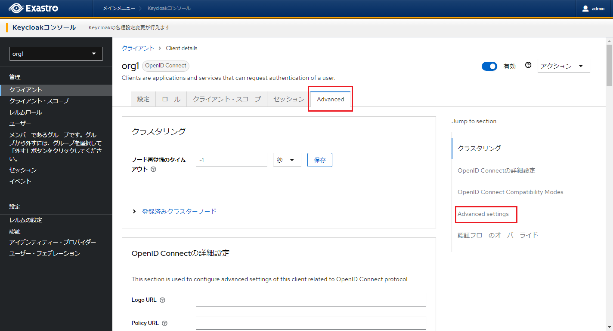 - Changing access token validity periodChange the access token's validity period items from "inherits from realm settings" to "Validity period" and input the desired time.Scroll down and press the Save button to save any changes made.
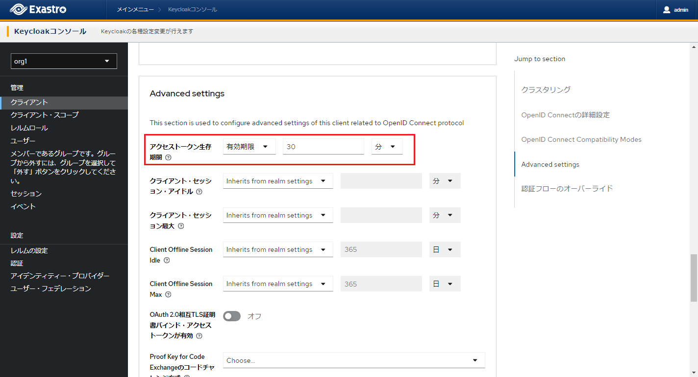 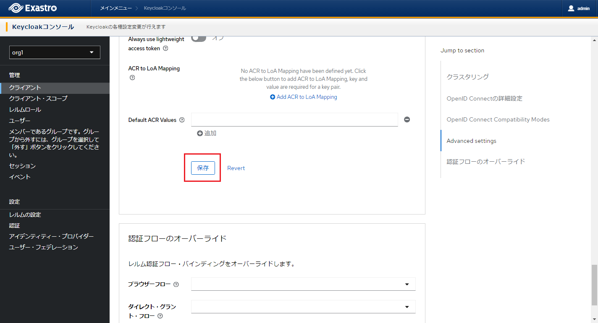 注釈
If Access tokens exceeds the max time set in SSO session/idle/Max SSO sessions, the token will be deactivated even if within the validity period.If the user needs the access token's validity period to be more than the default SSO default settings (idle(30min)/SSO session(10h)),change the SSO session/Idle/Max SSO session time to fit.
{kind=link}
{kind=link}
{kind=link}
{kind=link}
6.2.3. Changing SSO session/idle/Max SSO sessions¶
- Display Session SettingsSelect the desired realm with the aforementioned Select Realm (Organization) ` and select :menuselection:`Realm settings from the menu.This will display the page. Select and move to the page.
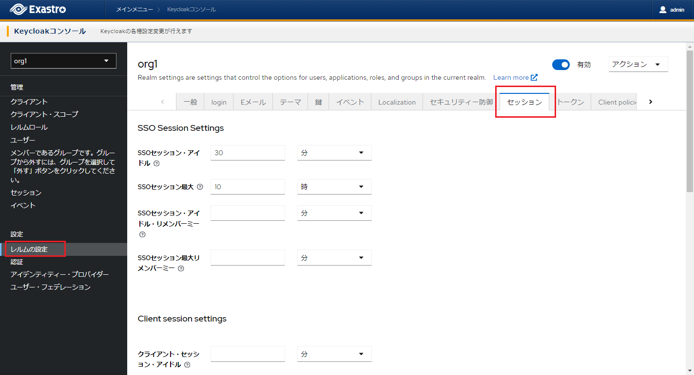 - Changing access token validity periodInput the desired time to the SSO session/idle/Max SSO sessions item.Scroll down and press the Save button to save any changes made.
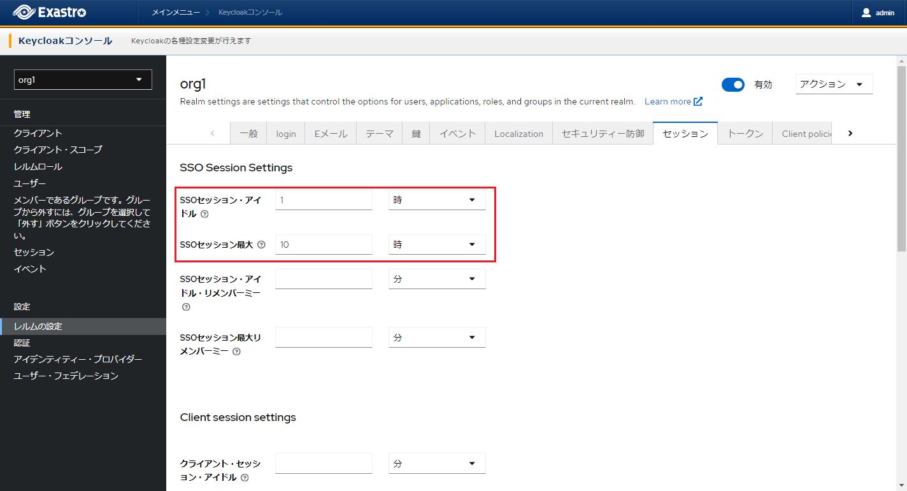 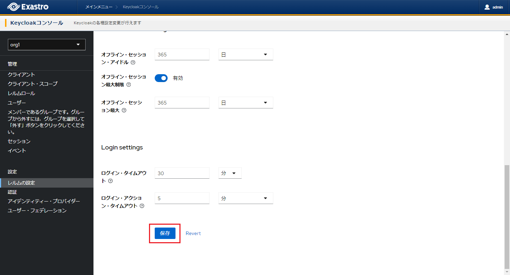
{kind=link}
{kind=link}
{kind=link}